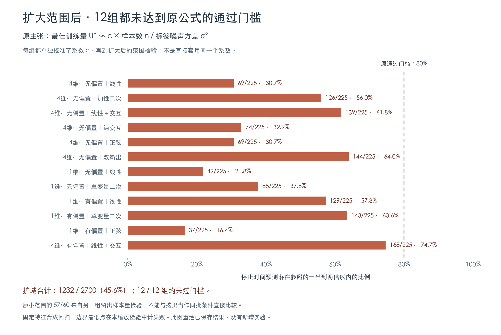
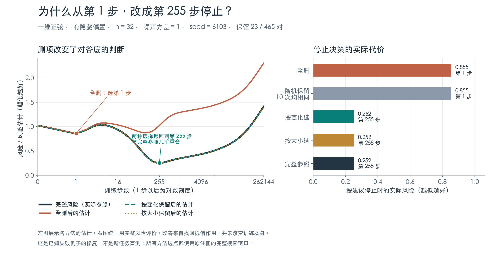
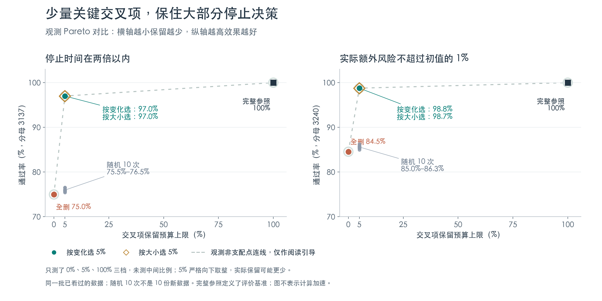

D2 · 泛化为什么变弱 · 证据更新于 2026-10-29
为什么越学，泛化反而越差？
模型在练习题上越来越熟练，换一批题却可能做得更差。这就是 D2 要解释的现象：训练误差继续下降，泛化误差却开始回升。
D2 原来尝试用“样本有多少、答案有多吵”概括这个过程，预测什么时候开始变差。后续实验表明：原来的广义预测主张已被推翻，不能靠换个系数继续沿用。
阅读顺序：先理解问题，再看原主张与反证，然后解释当前数学框架能说什么，最后看交叉项消融、剩余失败和未启动的实验。本次只更新既有证据的判定与表达，没有新增研究运行。
手机上表格可左右滑动，点击图片可查看高清图。
01先看全貌：学会训练题，为什么不等于学会规律？
训练误差衡量模型对用来学习的样本做得怎样；泛化误差关心它遇到新输入时是否仍然可靠。这里用另外生成的验证样本估计泛化表现，以预测和正确答案之差的平方平均值（MSE）记分，越低越好。
训练标签可能混有随机错误，叫标签噪声。模型继续降低训练误差时，既可能更接近真实规律，也可能更贴近这些错误。因此，训练进步与泛化改善不是同一件事。噪声是候选原因之一，不能未经检查就把每一次回升都归因于它。
| 研究层面 | D2 要回答的问题 | 目前能说到哪里 |
|---|---|---|
| 现象 | 继续训练，验证误差会不会回升？ | 在已测固定特征回归中观察到了；不是每条曲线都在窗口内部出现最低点。 |
| 解释 | 回升来自拟合噪声，还是无噪声部分也在恶化？ | 有精确分解可以记账，但尚未完成跨条件的原因归因实验。 |
| 预测 | 能否提前知道什么时候该停？ | 原简单比例公式外推失败；实用的仅依赖训练数据的方法尚未建立。 |
停止时间是这个现象的一种测量。本文寻找观察窗口内的最低误差位置，记为 $t_*$；它是格点搜索与局部精化的估计，不保证等于第一次局部回升的位置。
02原来主张什么，哪些已经站不住？
原来的直觉是：数据越多，可以训练得越久；标签越吵，应该越早停。D2 把它写成 $U_*\approx c\,n/\sigma^2$：$n$ 是样本数，$\sigma^2$ 是噪声方差，$U=\eta t$ 是学习率乘步数，$c$ 是从已有数据拟合的系数。
如果把它当作跨任务、跨样本与噪声范围的规律，就已经失败。 旧窄范围留出样本量的检验有 57/60 个预测在两倍以内；扩大范围后，允许每组任务重新校准自己的系数，仍只有 1232/2700（45.6%）通过，12 组都未达到原定 80% 门槛。保留窄范围结果，不等于原广义主张被救回。
| 接受检验的说法 | 已有反证 | 现在的判定 |
|---|---|---|
| 扩大范围后，每任务只需换一个系数，仍可用 $n/\sigma^2$ 预测 | 扩域 1232/2700；12/12 组未过门槛 | 原扩域主张被推翻；原窄范围经验拟合保留。 |
| 约 1.55 次方可以描述整个后期回升 | 外推到窗口末，78/78 超出两倍误差 | 尾部外推被推翻；原相对距离 0.1–1 内的短段描述保留。 |
| 至少 90% 的回升点应先把训练误差压到初值 10% 以下 | 仅 766/3137（24.4%）满足；中位仍为初值 33% | 这条必要条件预测被推翻；训练误差还不很低时，泛化就可能恶化。 |
| 旧归一化修正能让跨样本量的系数聚合极差减半 | 旧 r113 的极差反而增至 4.68 倍 | 该修正预测失败；不能用部分种子变好覆盖总体失败。 |

一个不用统计术语就能看懂的反例
原四维无偏置交互任务，固定噪声方差为 1、seed=6101：样本数 128 → 256 → 512，最低点步数却是 139 → 173 → 209。样本每次翻倍，停止时间并没有随之翻倍。三个数来自已保存曲线，说明该比例关系在这些条件下失效。
上述“被推翻”都对应明确的检验范围。尚未测试的学习特征、分类、Adam 等场景，标为未验证，不伪装成已经做过失败实验。
03仍成立的框架：把泛化误差拆开看
本研究的模型先把输入变成固定的 ReLU 特征，只学习最后如何组合这些特征。隐藏特征不随训练变化，平方损失下的梯度更新因此可以解析求解。固定特征是关键前提，小模型则让完整计算容易实现。 这些结果不能直接搬到训练中持续改变特征的网络上。
下面把对训练噪声取平均后的干净验证误差称为风险 $R$。它可以拆成：没有训练标签噪声时本来就有的误差 $B$，加上学习标签噪声带来的平均代价 $\sigma^2N$。
| 想回答什么 | 公式 | 人话解释与适用条件 |
|---|---|---|
| 误差由什么组成？ | $R(t)=B(t)+\sigma^2N(t)$ | 固定输入、特征和零均值独立同方差训练噪声下的精确分解；它是解析事实，不是新发现。 |
| 为什么还会继续改善？ | $B'(t)+\sigma^2N'(t)<0$ | 若无噪声部分改善得比噪声代价增加得快，总误差仍下降。 |
| 何时转为恶化？ | $B'(t)+\sigma^2N'(t)>0$ | 总变化率为正。也可能是 $B$ 自己在增加，不能总说成“只因拟合噪声”。 |
| 最低点的条件是什么？ | $B'(t_*)+\sigma^2N'(t_*)=0$ | 连续谱插值的光滑内部最低点满足斜率为零；不要求 $B=\sigma^2N$，也不保证只有一个谷底。 |
$B$：无训练噪声时的验证误差，不保证始终下降；$N$：单位噪声方差的响应；撇号：随步数的变化率。连续插值的导数条件不等于整数步最低点的精确等式。
已有测量支持的具体认识：在 3137 个内部最低点条件中，到一半最低点时间时，噪声代价已达到最低点时该项的中位 77%（范围 35%–100%）。所以“总误差尚未回升”不等于“还没开始学进噪声”。这反驳一种直觉解释，不把它冒充为新增的原预注册主张。
为什么可以不逐步训练，直接算出风险？
每个谱方向的参数偏离最终拟合解的量满足 $e_i(t+1)=(1-2\eta\lambda_i)e_i(t)$；$\lambda_i$ 是固定训练特征协方差的特征值。因此可以直接写出第 $t$ 步的参数，而不必逐步迭代。
这个固定因子作用于参数在该方向上的偏差，不是说验证误差每一步都按固定比例下降。验证风险还要结合目标、验证输入上的几何结构和噪声来算。当前完整风险和 5% 选择使用干净目标与验证几何，尚不是只看带噪训练数据就能部署的早停方法。
单次训练也不等于噪声平均：旧 60 个条件里，单次干净验证最低点与期望风险最低点之比为 0.24–86.72。平均曲线的最低点不能直接当成每次训练的最佳步数。
04后续消融：删掉交叉项，究竟检验了什么？
简单公式失败后，我们研究了一个更窄的问题：已知完整风险表达式，能否用少量项近似保留停止决策？ 这与解释“为什么模型实际泛化变弱”有关，但不是同一个实验目标。
两个学习方向分别贡献 $a$ 和 $b$，目标为 $y$，平方误差展开为 $(a+b-y)^2=a^2+b^2+2ab-2y(a+b)+y^2$。其中 $2ab$ 是交叉项，记录两部分相互增强或抵消。例如 $a=2,b=-1,y=1$，完整误差为 0；漏掉交叉项 −4，估计会变成 4。这只是手算示意。
| 计算方式 | 公式 | 改变了什么 |
|---|---|---|
| 完整风险 | $R=R_{\rm diag}+\sum_{i<j}C_{ij}$ | 保留所有方向之间的配合。 |
| 只留对角项 | $\widehat R=R_{\rm diag}$ | 只删除谱二次项中的交叉项；目标匹配项等仍保留。 |
| 保留至多 5% | $\widehat R_S=R_{\rm diag}+\sum_{(i,j)\in S}C_{ij}$ | $S$ 是保留名单；不重新拟合系数，不删除模型参数。 |
沿用已有的 12 组任务与特征 × 10 档样本量 × 9 档噪声 × 3 个主种子 = 3240 条曲线。模型先把输入变成 128 个固定特征，训练只调整这些特征怎样组合成答案，也就是只训练输出层。我们复用已有学习过程，比较不同误差计算方式；本轮没有重新训练网络。
- 先核验数据、再预注册。 重验旧数据与产物哈希，冻结选择规则与通过门槛，然后计算删项后的风险曲线。
- 每组按同样的预算选项。 有效方向数为 $r$，可选对数 $M=r(r-1)/2$，保留 $K=\lfloor0.05M\rfloor$ 对；同一任务与数据的名单在九档噪声间共享。
- 先用近似选时间，再用完整风险评分。 $\Delta=[R(\hat t)-R(t_*)]/R(0)$。$\Delta\le1\%$ 才算额外误差小，不能拿近似模型自己的低估当成成功。
| 选择方法 | 评分或规则 | 通俗解释 |
|---|---|---|
| 按变化（主方案） | $s_{ij}=\max_{t\in\mathcal G}|(t+1)C'_{ij}(t)|$ | 优先保留沿训练进程变化显著的项 |
| 按大小（对照） | $s_{ij}=|C_{ij}(262144)|$ | 优先保留窗口末绝对贡献大的项 |
| 随机（对照） | 等预算、不放回抽取；固定十次 | 检验有针对性的选择是否比运气更好 |
怎样算预测得好？我们分开看两件事。 一是停止步数是否接近完整计算的最低点；二是按建议停止时，实际多付出了多少误差。平坦的谷底可能允许很多相近效果的停止时间，所以这两项不能互相替代。
| 评价指标 | 通过标准 | 一个说明标准的例子 |
|---|---|---|
| 时间是否接近 | 预测步数在参照的一半到两倍之间 | 若参照是第 100 步，预测第 50–200 步都算通过。 |
| 停止后的误差是否够小 | 比最低误差多出的部分，不超过训练初始误差的 1% | 若初始误差是 1，最低误差是 0.2，建议停止时的误差不超过 0.21 就通过。 |
表中数字仅用于解释评价规则，不是新实验结果。落在观察窗口两端的最低点不计算时间倍数，但仍评价实际误差。
展开 12 组任务、目标形状及本轮逐组结果
下面是归一化前的目标形状；实际每个输出通道按总体均方根归一化为 1。$a,b$ 是前两个输入坐标。四维目标不一定用到全部四个坐标；“有偏置”指 ReLU 内的阈值偏移。目标中的 $ab$ 与误差展开中的谱交叉项不是同一个对象。
| 任务与特征设置 | 目标形状 | 时间通过 | 额外误差通过 |
|---|---|---|---|
| 1 维 · 有偏置 线性 | $a$ | 270/270 | 270/270 |
| 1 维 · 有偏置 单变量二次 | $a+0.5(a^2-1)$ | 269/270 | 270/270 |
| 1 维 · 有偏置 正弦 | $\sin(2a)$ | 233/234 | 270/270 |
| 1 维 · 无偏置 线性 | $a$ | 241/270 | 270/270 |
| 1 维 · 无偏置 单变量二次 | $a+0.5(a^2-1)$ | 253/270 | 254/270 |
| 4 维 · 有偏置 线性＋交互 | $a+0.5ab$ | 253/266 | 267/270 |
| 4 维 · 无偏置 加性二次 | $a+0.5(b^2-1)$ | 247/263 | 264/270 |
| 4 维 · 无偏置 线性＋交互 | $a+0.5ab$ | 261/266 | 268/270 |
| 4 维 · 无偏置 线性 | $a$ | 267/267 | 270/270 |
| 4 维 · 无偏置 纯交互 | $ab$ | 222/230 | 258/270 |
| 4 维 · 无偏置 正弦 | $\sin a+0.5\sin(2b)$ | 263/264 | 270/270 |
| 4 维 · 无偏置 双输出 | $(a,\ a+0.5ab)$ | 264/267 | 269/270 |
本表为按变化保留最多 5% 的结果。每组时间分母只含内部最低点；风险分母均为 270。
展开计算约定与精确谱公式
输入为 1 或 4 维标准高斯；样本量 16–1024、噪声方差 1/32–8、独立干净验证样本 2048 个；输出层零初始化，MSE、学习率 $\eta=0.3$，无动量和权重衰减。120 个数据与特征抽样被任务和噪声条件复用，3240 条不是独立重复。
在训练协方差的特征方向中，$f_i(t)=[1-(1-2\eta\lambda_i)^t]/\lambda_i$；$\lambda_i$ 为有效特征值。$g_i$ 为训练目标投影，$H_{ij}$ 为验证特征在这组方向中的内积，$h_{ij}=H_{ij}\langle g_i g_j\rangle$，尖括号表示对输出通道平均。于是 $C_{ij}=2h_{ij}f_i f_j$。未保留项置零，系数不重新拟合。
评分格点 $\mathcal G$ 为整数 0–16 加 17–262144 的 128 个取整对数格点。找最低点则使用整数 0–256 加 4096 个取整对数格点，并在附近精化；没有穷举所有整数极值。全部 103 个窗口边界最低点保留在风险评价中，只退出时间倍数分母。
60/360 个任务与数据组合因低秩而保留 0 对；21/120 个数据与特征抽样有很接近的特征值，方向选择的稳健性还没有验证。变化和大小评分仍使用干净目标、验证几何，并检查全部交叉项。
05为什么会把第 255 步错认成第 1 步？
这个例子是一维正弦任务，有隐藏偏置，$n=32,\sigma^2=1$，seed=6103。完整风险在第 255 步更低；全删交叉项却建议第 1 步就停。31 个有效方向共有 465 对交叉项，补回 23 对后，变化法和大小法都选回第 255 步。

| 同一时间的记账 | 第 1 步 | 第 255 步 | 怎么理解 |
|---|---|---|---|
| 删掉全部交叉项的估计 | 0.858 | 1.021 | 误以为继续训练更差 |
| 完整交叉项的总贡献 | −0.003 | −0.769 | 晚期有很大的抵消作用 |
| 完整风险 | 0.855 | 0.252 | 加回抵消项，晚期明显更好 |
| 按变化保留 23 对后的估计 | 0.858 − 0.003 ≈ 0.855 | 1.021 − 0.769 ≈ 0.252 | 少数项近似恢复了净贡献 |
全删和十次随机保留都选第 1 步，实际风险约 0.855；两种有针对性的选择都选第 255 步，实际风险约 0.252。修复的是一个已知开发例子，不能把它当作新任务盲测。表内短数经过舍入，完整精度见逐项记录。
06消融的局部成功，不能救回原主张
“所有交叉项都可以忽略”的注册检验失败：对角近似只有 6/12 组同时过关。补回少量有针对性的项后，在同一批已看过的数据中改善明显。再看全部条件：按变化选择最多 5% 的交叉项，时间预测通过率为 97.0%，额外误差通过率为 98.8%。前者只评价 3137 个内部最低点，后者评价全部 3240 个条件；它们不是模型答题的正确率。
下面的图比较“保留多少交叉项”和“有多少条件通过上述标准”。横轴越小，保留的交叉项越少；纵轴越高，停止效果越好。Pareto 前沿指已测方法中，没有另一方法在“保留不更多、效果不更差”的同时，至少有一项更好的点。

| 方法 | 交叉项预算 | 时间在两倍以内 | 额外误差 ≤ 初值 1% | 达标任务组 |
|---|---|---|---|---|
| 全部删除 | 0% | 2352/3137 (75.0%) | 2739/3240 (84.5%) | 6/12 |
| 按变化保留 | ≤5% | 3043/3137 (97.0%) | 3200/3240 (98.8%) | 12/12 |
| 按大小保留 | ≤5% | 3042/3137 (97.0%) | 3199/3240 (98.7%) | 12/12 |
| 随机保留（10 次） | ≤5% | 75.5%–76.5% | 85.0%–86.3% | 5–6/12 |
| 完整参照 | 100% | 3137/3137 (100.0%) | 3240/3240 (100.0%) | 12/12 |
变化法与大小法基本打平。 两者都通过 12 组，两个总体指标各只差 1 条，不能据此认定变化评分更优。随机法十次均明显较差；这些是同一批数据上的十份名单，不是十次独立数据实验。
查看十次随机选择的全部结果
| 随机名单 | 时间通过 | 额外误差通过 | 达标组数 |
|---|---|---|---|
| 01 | 2401/3137 | 2795/3240 | 6/12 |
| 02 | 2373/3137 | 2784/3240 | 6/12 |
| 03 | 2380/3137 | 2754/3240 | 6/12 |
| 04 | 2367/3137 | 2768/3240 | 6/12 |
| 05 | 2386/3137 | 2774/3240 | 6/12 |
| 06 | 2374/3137 | 2778/3240 | 6/12 |
| 07 | 2398/3137 | 2774/3240 | 6/12 |
| 08 | 2380/3137 | 2764/3240 | 6/12 |
| 09 | 2386/3137 | 2764/3240 | 5/12 |
| 10 | 2384/3137 | 2779/3240 | 6/12 |
075% 仍有反例；哪些更强的说法不能成立？
这个反例是四维无偏置的加性二次任务，$n=24,\sigma^2=1/32$，seed=6103。另有 252/3240 条近似无噪声误差为负、20/3240 条近似总风险为负；负误差是近似失效，不能当作更好效果。
| 说法 | 证据状态 | 为什么要这样标记 |
|---|---|---|
| 5% 足以准确处理每一条曲线 | 有反例 | 94 条时间失败、40 条额外误差失败；但原注册要求是每组达到比例门槛，并非逐条全对。 |
| 5% 近似总是一个有效的风险函数 | 有反例 | 出现负的平方误差估计。停止决策通过与整条风险函数合理，是两个不同要求。 |
| 按变化选择明显优于按大小选择 | 没有优势证据 | 时间通过 3043 对 3042；低额外误差通过 3200 对 3199。两者基本打平。 |
| 已经实现训练前、只依赖训练数据的实际预测 | 未建立 | 当前依赖干净目标与验证几何；解析可算不等于真实问题中信息可得。 |
| 只留 5% 就节省 95% 计算 | 未建立 | 选项时仍读取所有交叉项；没有端到端算力收益测量。 |
| 已找到泛化恶化的普适原因 | 未建立 | 只改表达式，没有进行改变真实学习过程的因果干预；固定特征结果也未覆盖端到端网络。 |
“未建立”表示没有足够证据，不等于已做实验并证伪。未覆盖分类、交叉熵、Adam、小批量、学习特征；已有 12 组均属合成回归与已观察的开发数据。
08下一步回到原因：泛化恶化，到底是哪部分在变差？
优先问题：最低点之后增加的误差，有多少来自标签噪声，有多少来自无噪声部分？ 先解释这个现象，再决定是否继续做交叉项压缩或停止时间预测。
| 拟议对照 | 保持不变／只改变什么 | 希望区分的原因 |
|---|---|---|
| 干净标签、低噪声、高噪声 | 固定输入、特征、初始化；只改训练标签噪声 | 没有标签噪声时是否仍会恶化，噪声又增加了多少代价。 |
| 同时记录训练与验证误差 | 分别对带噪训练标签、干净训练标签和干净验证标签记分 | 是在学真实规律，还是越来越贴近错误答案。 |
| 拆解最佳点到晚期的增量 | 预先规定晚期观察规则，分别计算 $\Delta B$ 与 $\sigma^2\Delta N$ | 总误差增加是否只是噪声超过收益，还是无噪声部分也在恶化。 |
| 检查不同噪声实现 | 同一输入与特征，换训练标签噪声实现 | 平均曲线的解释能否描述单次训练，而非仅在平均后成立。 |
先从线性参照、第 1／255 步正弦例子、四维交互目标和 5% 最差的加性目标入手。已看过的例子只能用于开发解释；独立验证要先冻结方案。新种子用于重复性，不能单独算成新任务。
09证据与已有研究：哪些来自论文，哪些来自本实验
固定特征下解析求解学习过程、按谱方向分析早停，都有已有理论。交叉项来自平方展开，本身不是新发现；我们具体做的是删项与停止决策的对照。以下核对的是相关章节，不是完整的新颖性审查。
| 原始来源 | 与 D2 的关系 | 不能据此声称什么 |
|---|---|---|
| Ali、Kolter、Tibshirani，2019 | Lemma 1、式（6）、3.1 节：固定特征最小二乘梯度流的解析路径与谱分解。 | 论文主要分析连续时间；D2 离散步数实现及其特定数字需要自身证据。 |
| Bodin、Macris，2021 | 随机特征模型在高维渐近设置下的训练与泛化误差时间路径。 | 不能把其特定假设下的结果当成 D2 所有有限样本任务的保证。 |
| Raskutti、Wainwright、Yu，2014 | 3.1 节、式（4）–（6）：基于数据谱和噪声水平的早停规则，无需独立验证集。 | 统计误差保证不等于准确命中每条曲线的最佳整数步。 |
固定 5% 预算与本轮变化评分是实验设计选择，没有“5% 必然足够”的定理。当前检索未找到完全相同的实验，不等于确认首次提出；旧“文献深度确认”页只是摘要级历史对照。
本页只整理已保存结果，没有新增实验。两轮预注册均早于计算；本次发布前再次按结果清单校验导出文件。完整曲线重建最大归一化差为 7.8×10⁻¹¹；4320 个掩码已核对，另有 96 次独立特征空间核验。